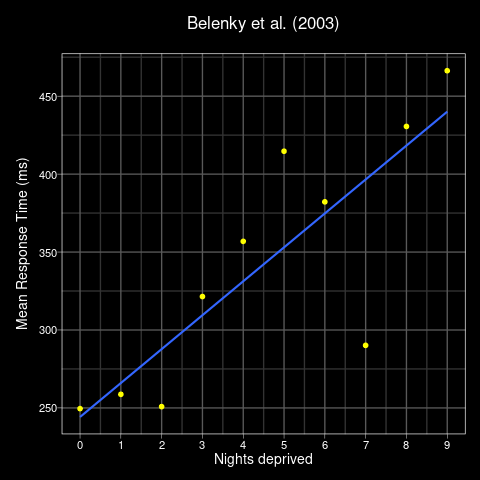
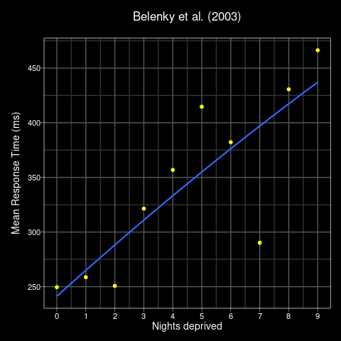
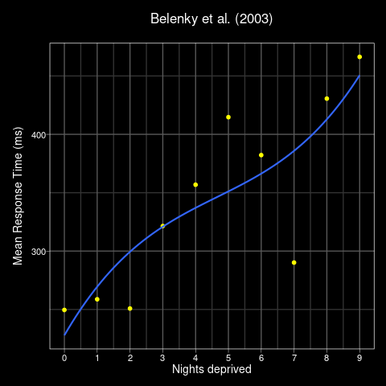
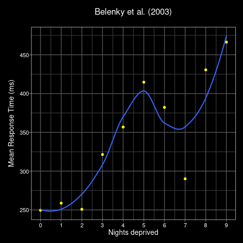
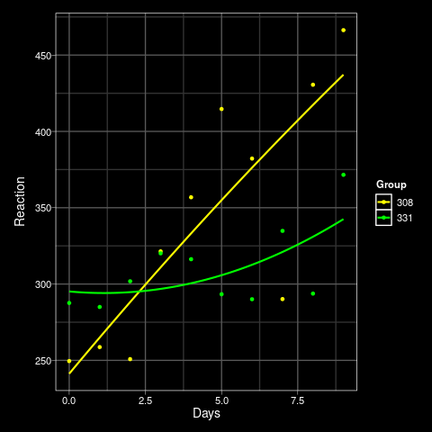

Dale Barr (University of Glasgow)
Mixed-effects workshop, March 3-4, 2022 (Basel)
a.k.a., “growth curve analysis”, “latent trend models”
approach: assume the pattern of growth/change develops following the parameters of some unobserved (latent) function

\[Y_i = \beta_0 + \beta_1 t_i + e_i\]
linear trend is assumed as an approximation
\(\beta_0\) = 244
\(\beta_1\) = 22
quadratic

cubic

“wiggly”

Order:
| first (linear) | \(Y_i = \beta_0 + \beta_1 t_i + e_i\) |
| second (quadratic) | \(Y_i = \beta_0 + \beta_1 t_i + \beta_2 {t_i}^2 +e_i\) |
| third (cubic) | \(Y_i = \beta_0 + \beta_1 t_i + \beta_2 {t_i}^2 + \beta_3 {t_i}^3 +e_i\) |
lin <- lm(Reaction ~ Days, s308)
quad <-
lm(Reaction ~ Days +
I(Days^2), s308)
cub <-
lm(Reaction ~ Days +
I(Days^2) + I(Days^3), s308)
quar <-
lm(Reaction ~ Days +
I(Days^2) + I(Days^3) +
I(Days^4), s308)
quin <-
lm(Reaction ~ Days +
I(Days^2) + I(Days^3) +
I(Days^4) + I(Days^5), s308)
AIC(lin, quad, cub,
quar, quin)
df AIC
lin 3 109.4793
quad 4 111.4623
cub 5 112.9690
quar 6 109.6509
quin 7 111.6476

mod2 <- lm(Reaction ~ (Days + Days2) * group,
data = stwo)
summary(mod2)
Coefficients:
Estimate Std. Error t value Pr(>|t|)
(Intercept) 268.2169 22.1882 12.088 8.51e-09 ***
Days 11.0770 11.4816 0.965 0.351
Days2 0.2709 1.2281 0.221 0.829
group 53.8655 44.3765 1.214 0.245
Days:group -25.7381 22.9632 -1.121 0.281
Days2:group 1.0266 2.4563 0.418 0.682
---
codes: 0 ‘***’ 0.001 ‘**’ 0.01 ‘*’ 0.05 ‘.’ 0.1 ‘ ’ 1
Residual standard error: 39.91 on 14 degrees of freedom
Multiple R-squared: 0.6785, Adjusted R-squared: 0.5637
F-statistic: 5.91 on 5 and 14 DF, p-value: 0.003852